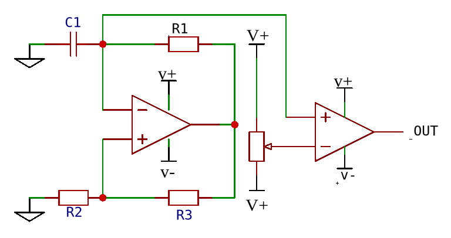

Op-Amp Oscillator for Adjustable Frequency & duty cycle control
Workings:
The circuit is designed to oscillate between states, using an operational amplifier (op-amp)
in a feedback loop. It includes a resistor divider R1 and
R2, which sets a constant voltage on the non-inverting pin (pin 1)
of the op-amp.
The inverting pin (pin 2) is connected to a resistor, R3, and the
output pin (pin 3) of the op-amp is connected to the base of an NPN transistor through a
200-ohm resistor.
When no current flows, the voltage on pin 3 is higher than the voltage on pin 2, causing the
output to be high. This turns on the transistor, allowing current to flow. As current flows,
a voltage drop occurs across the R3 resistor. When the voltage
across R3 exceeds the voltage on pin 3, the output of the op-amp
turns low, which turns off the transistor. This cycle continues indefinitely.
Calculations:
1. Voltage Divider Calculation:
To find the voltage at the non-inverting input (V+) of the
op-amp:
V+ = Vin × (R2 / (R1 + R2))
where Vin is the input voltage, and R1
and R2 form the resistor divider network.
2. Voltage Across R3:
When the transistor is on, the voltage across R3
(VR3) can be found using Ohm's Law:
VR3 = IC × R3
where IC is the collector current of the transistor.
3. Threshold Voltage:
The voltage at the inverting input (V-) of the op-amp must reach
the threshold to toggle the output state. This threshold is determined by the voltage
across R3
V- = VR3 = IC × R3
When V- exceeds V+, the output of the
op-amp switches low.
4. Oscillation Frequency:
The frequency of oscillation (f) can be approximated if the timing
components and circuit characteristics are known. A basic estimation might be:
f = 1 / T
where T is the period of one complete cycle of oscillation. This period is
influenced by the charging and discharging time constants of the capacitor (if present)
and the resistor network.
Consideration:
Power Supply:
It's crucial to keep the Vcc constant because fluctuations can alter the voltage
at V1, which affects the current. Using a constant voltage lab bench
power supply or a voltage regulator like the LM7805 or
LM1117 will do the job.
Example:
.png)
.png)
.png)